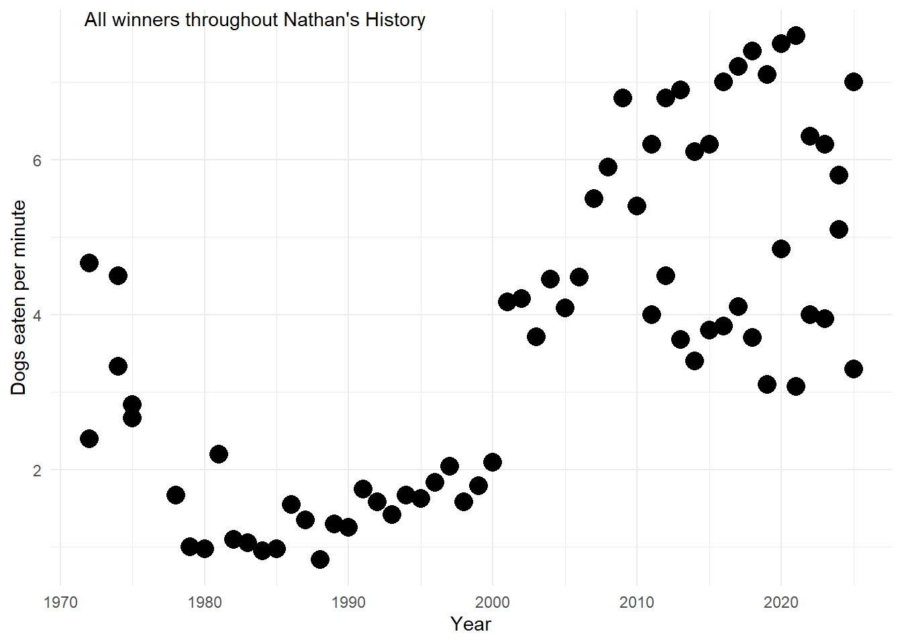
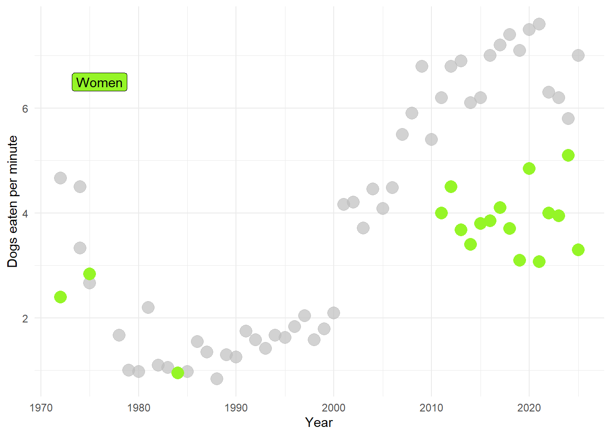
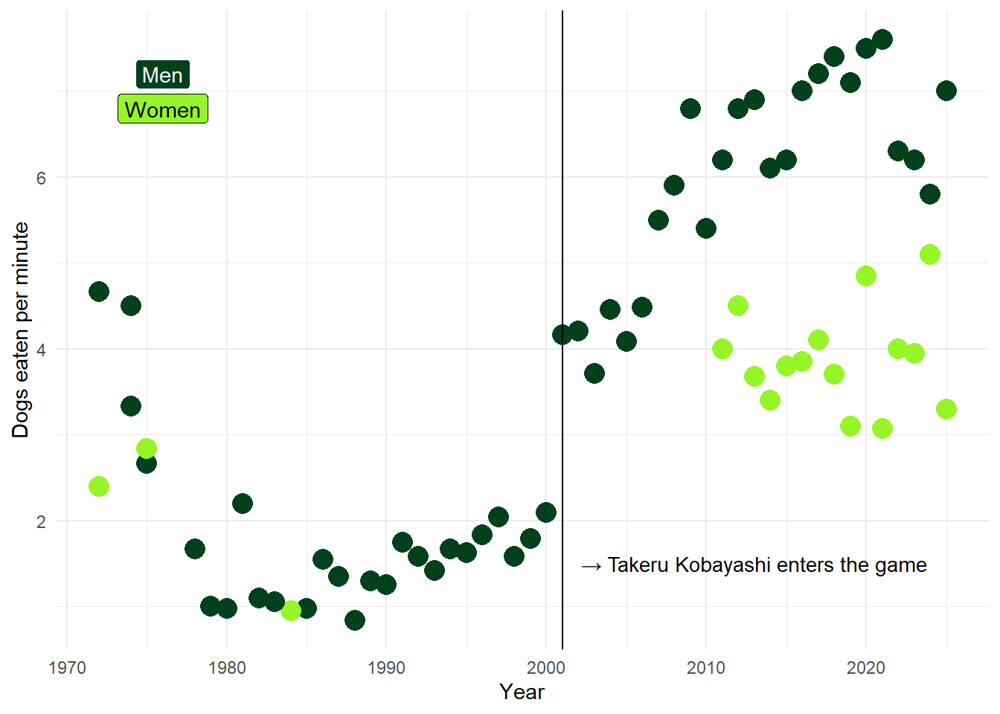
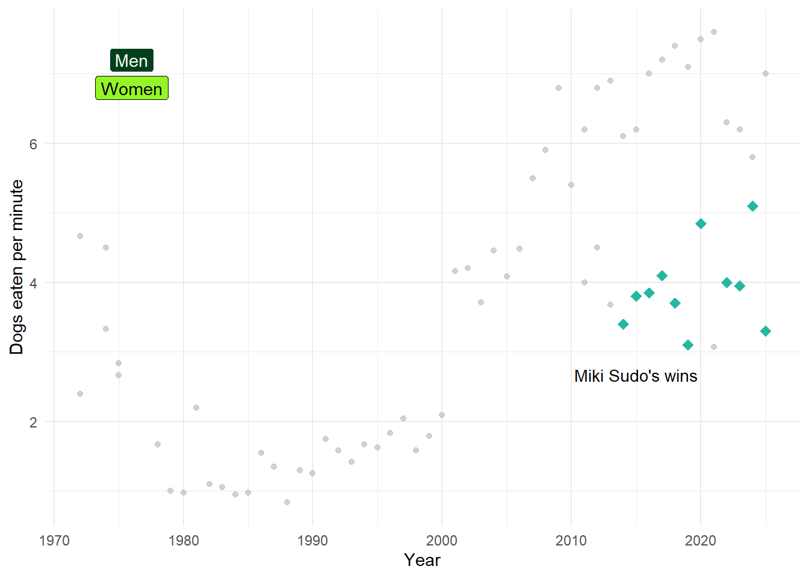
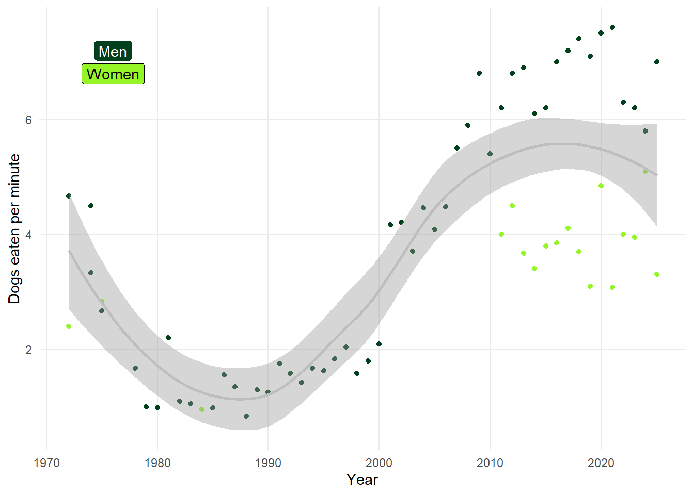
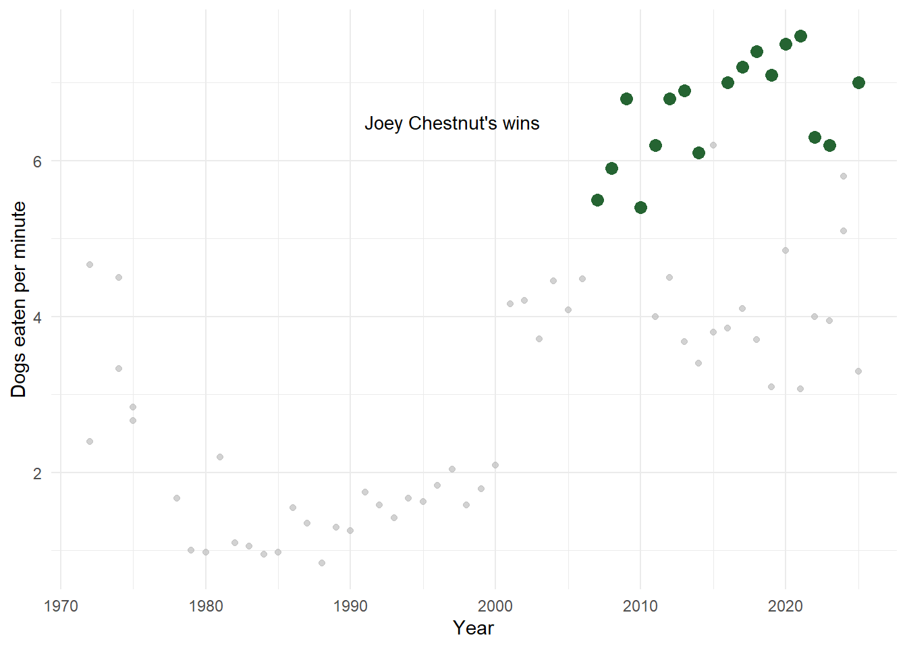

Hot Dog Closeread
Using closeread HTML to tell the story of Nathan’s Hot Dog Eating Competition.
A data storytelling module teaching students to use Closeread HTML to visualize data meaningfully.
Author
Elena Cortina Pino
Notes: use tennis sample size module template to fit this module in
In this demo, we’ll create a plot with data from the Wikipedia page for The Story of Nathan’s Hot Dog Eating Competition.
Data was accessed from Wikipedia, “Nathan’s Hot Dog Eating Contest”, and cleaned with the R tidyverse library. (https://en.wikipedia.org/wiki/Nathan%27s_Hot_Dog_Eating_Contest).
The Story of Nathan’s Hot Dog Eating Competition.
Let’s take a look at the development of this historical competition.
- First we set the stage for where the data points will be represented and explain the axes clearly with straightforward labeling.
- The y-axis is already modified to account for standardization since the competitions across the years lasted different times. This was done with
dplyrfromtidyverse. The simple mathematics for the y-axis are: \(\text{Dogs per minute} = \frac{\text{Dogs eaten}}{\text{Event time}}\)
The Nathan’s Famous Fourth of July International Hot Dog Eating Contest has a 100+ year tradition. Over time, competitors have pushed the limits of human capacity in ways no one originally imagined.
Now we can start the story from the beginning! (Let’s add the data points without formatting…)shows us the big picture for the historical timeline of winners across Nathan’s story. We added the points without formatting to be able to create a baseline from which to build up our descriptions of special aspects of the data-that’s the main goal for data storytelling in highlighting the meaningful from the seemingly unclear.
can distinguish categories in the data by taking advantage of the ggplot2 library. This particular data set does not include many categories that would allow us to see different dimensions of the data points. However, we can use the winners’ genders to highlight a breakthrough in the competitions , and can use that to our advantage to extrapolate the narrative to other competitive eating events, and changes they underwent to make competitions inclusive, or more fun!
- Here we map the color aesthetics of the plot to distinguish between male and women in the competition with 2 different colors.
- An interesting feature of this plot is the function gghighlight from the library gghighlight. This allows us to keep our other data points in the plot intact and highlight the points we want to highlight based on a specific feature without having to filter, slice, or select portions of our data to mae out the plot!
Let’s take a closer look at the changes in the competition from 2011:art of annotation can be tactfully developed. Sometimes more is more, sometimes, an overwhelming amount of annotations in the plot can create confusion in the reader and distract from the main point.
Use text and label aesthetics to distinguish between levels of importance in the annotations inside the plot.
Takeru Kobayashi introduced some serious techniques into his competitive eating. His strategy consisted of eating some cabbage and fasting before the contests. - This kind of commentary can complement what is happening inside the plot. There are many ways to explain that Takeru changed the game while highlighting that in the plot using a line (like done here), highlighting the point that corresponds to Takeru’s first win with a bright red diamond shaped point, etc…
Here’s a look at the code that produces this annotated plot.
In the women’s category, Miki Sudo, native to Florida, is the overall champion.
Taking a look at the general trend of the wins:
when it comes to making inferences on time series data like this one, it is easy to infer things that aren’t necessarily causal or follow a mathematical trend. Perhaps that is the distribution of the points for this particular data and that’s the information we have and work with. - Other data sets with independent variables other than time allow us to draw more nuanced interpretations on the relationships between the variables in out plot.
There seems to be a sinusoidal trend in the hot dog wins.
- This comment could be something entirely different such as: “It seems like the amount of hot dogs competitive eaters can consume will begin flattening after a few more years.”
Exercise
This is the solution plot for the exercise in this module. Many solutions possible. A correct plot includes:
- Labeled axes for x = year and y = dogs eaten per minute
- Dot plot for all the observations in the data set.
- Highlight for Joey Chestnut’s observations.
- Different color and/or shape for Joey Chestnut’s observations.
- Annotation that explains shortly which points correspond to Joey Chestnut’s wins.



ggplot(hotdog_clean_2) +
aes(x = Year, y = standard) +
geom_point(aes(colour = factor(Sex))) +
scale_colour_manual(values = c(“#95F527”, “#01401C”)) +
annotate(“label”, x = 1976, y = 6.8, label = “Women”, fill = “#95F527”) +
annotate(“label”, x = 1976, y = 7.2, label = “Men”, fill = “#01401C”,
color = “#FFFFFF”) +
guides(colour = “none”, shape = “none”) +
theme_minimal() +
theme(legend.position = “none”) +
labs(x = “Year”, y = “Dogs eaten per minute”) +
geom_vline(xintercept = 2001, linetype = 1) +
annotate(“text”, x = 2013, y = 1.5, size = 3.63,
label = “→ Takeru Kobayashi enters the game”)
aes(x = Year, y = standard) +
geom_point(aes(colour = factor(Sex))) +
scale_colour_manual(values = c(“#95F527”, “#01401C”)) +
annotate(“label”, x = 1976, y = 6.8, label = “Women”, fill = “#95F527”) +
annotate(“label”, x = 1976, y = 7.2, label = “Men”, fill = “#01401C”,
color = “#FFFFFF”) +
guides(colour = “none”, shape = “none”) +
theme_minimal() +
theme(legend.position = “none”) +
labs(x = “Year”, y = “Dogs eaten per minute”) +
geom_vline(xintercept = 2001, linetype = 1) +
annotate(“text”, x = 2013, y = 1.5, size = 3.63,
label = “→ Takeru Kobayashi enters the game”)



Thank you for scrolling!